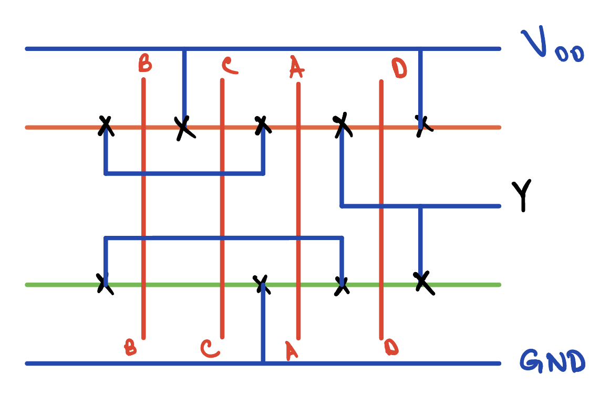
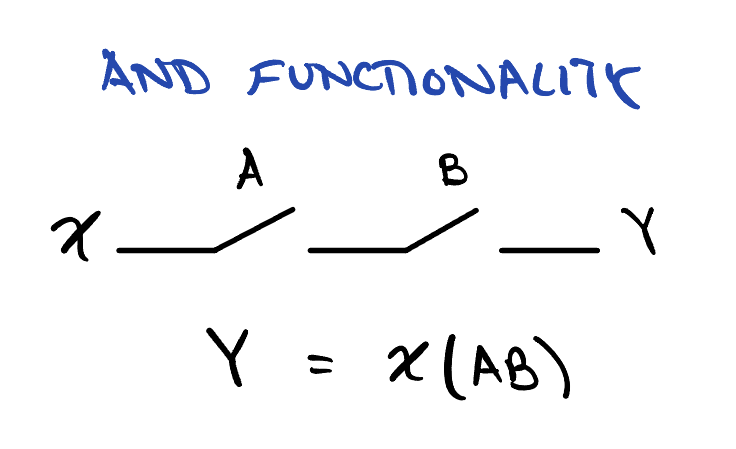
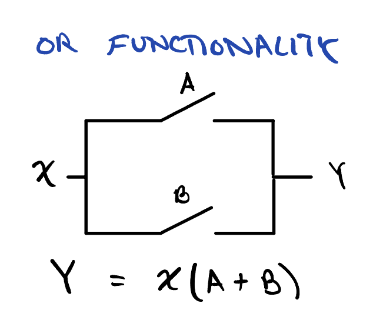
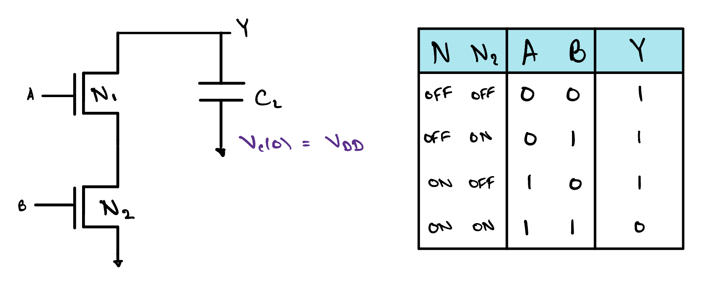
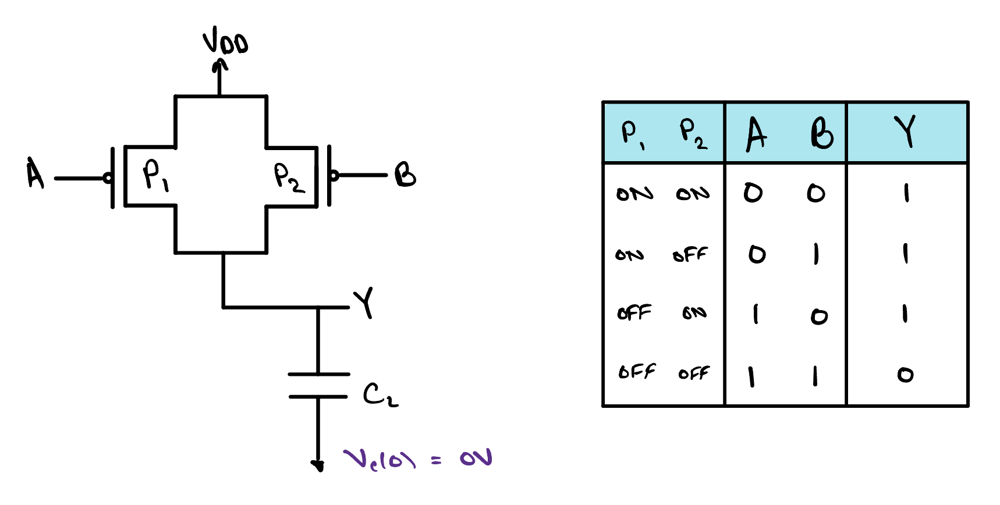
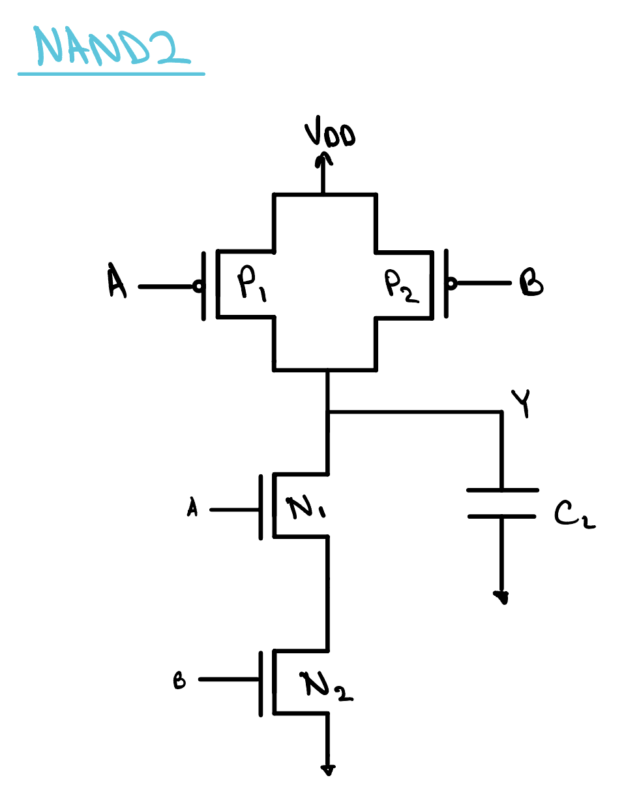

Implementing Arbitrary Logic and Stick Diagrams
The inverter showed us one gate in silicon. In this lesson we take the same idea further: any logic expression can be built as a pull-up network and a pull-down network, and a stick diagram lets us sketch its layout before drawing a single rectangle for real.

Switches in Series and in Parallel
Before we build anything out of transistors, it is worth stepping back to the plainest picture we have of one: a switch. A transistor either joins its two ends or it does not, and the gate decides which. Once we think of it that way, the two logic operations we have leaned on since the very first lesson turn out to have shapes.


This is the whole trick, and everything else in the lesson is a consequence of it. Any expression made of ANDs and ORs can be drawn as a network of switches, series for every AND and parallel for every OR, nested as deeply as the expression demands. Y = AB + C is two switches in series, and that pair in parallel with a third. Hold on to that picture. Silicon is about to add one twist to it.
Why CMOS Naturally Inverts
Let us try the simplest thing the last section suggests. We want Y = AB, so we take two nMOS transistors, which close when their gates are high, and put them in series between the output Y and ground. The capacitor CL stands for whatever Y drives, and we start it charged to VDD. Drive A and B high and both switches close, a path opens from Y down to ground, and Y discharges to 0. Any other combination leaves at least one switch open, and Y is not pulled anywhere.

Read the table. Y goes low when both inputs are high, and only then. That is not Y = AB, it is Y = AB, a NAND. The series pair computes the AND we asked for, but uses the answer to pull Y down, so what appears at the output is the AND inverted.
The Floating Node
There is a second problem. In the three rows where Y reads 1, nothing is driving it. That 1 is only the charge we left on CL, connected neither to ground nor to the supply, and a node in that state is floating, or high-impedance, written Hi-Z. A gate has to drive a definite value for every input, so for every row where the pull-down is open, a pull-up network has to close and connect Y to VDD instead.
What shape should it have? The PDN pulls Y to 0 when AB is true, so the PUN must pull Y to 1 whenever AB is true, and De Morgan's law rewrites that condition in terms of the inputs themselves:
AB = A + B
Read the right-hand side as instructions. The pull-up should close when A is low or B is low. A switch that closes when its input is low is a pMOS, and OR means parallel. So the PUN is two pMOS in parallel between VDD and Y. Start CL empty this time and read the table: the pull-up charges Y to 1 in exactly the three rows the pull-down left floating, and in the fourth row it is the pull-up that has nothing to say.


Put the two networks together and check every row. With A and B both high, the two pMOS are off and the two nMOS are on, so Y is pulled firmly to ground. With either input low, at least one pMOS is on and the series pair is broken, so Y is pulled firmly to VDD. There is no input for which both networks are on, so there is never a path straight from supply to ground, and none for which both are off, so Y never floats. This is the static CMOS NAND, Y = AB, the same circuit you identified at the end of Transistor Basics.
Notice the shape of the two halves. The PDN is a series pair and the PUN is a parallel pair. That is De Morgan's law drawn in transistors. Every AND in the pull-down becomes an OR in the pull-up, and every OR becomes an AND, so the two networks are always duals of each other: where one is series, the other is parallel. Once the PDN is designed, the PUN is written for you.
Now the general lesson. An nMOS closes for a high input and connects the output to ground, so whatever the PDN computes arrives at the output upside down. A pMOS closes for a low input and connects the output to the supply, which is the same inversion seen from the other side. A single stage of static CMOS therefore produces the complement of its pull-down function, and that is what it means to call CMOS a naturally inverting technology. Y = AB, Y = A + B and Y = A each come out of one stage. Y = AB does not. To build it you build the NAND and follow it with an inverter, and in a real cell library that is exactly what the AND cell is: three transistor pairs, not two.
The recipe for an arbitrary function follows directly. Write the function you want in the form Y = F. Draw F as a network of nMOS switches, series for AND and parallel for OR, between the output and ground. Then draw its dual out of pMOS switches, parallel where the PDN was series and series where it was parallel, between the output and VDD. The gate you are left with computes F for every input, never floats, and never draws static current.
Stick Diagrams
A schematic tells us which terminal connects to which. It tells us nothing about where anything sits on the silicon, and in the last lesson we saw that the layout of even an inverter is a different picture from its schematic. Drawing a full layout is slow work, with every rectangle sized to the process rules, and it is a poor way to think. What we want is something in between: a sketch that keeps the geometry of the layout and throws away the dimensions. That sketch is a stick diagram, and it is drawn with coloured lines, one colour per layer, each line standing for a strip of material whose width we will decide later.
The Layers
Four colours carry the whole drawing. Green is n-type diffusion, the strip of silicon that nMOS transistors are formed in. Orange is p-type diffusion, the strip the pMOS transistors are formed in. Red is polysilicon, the gate material. Blue is metal, the wiring that joins everything up. Where a wire on one layer needs to reach a wire on another, a small cross marks a contact, the vertical connection we met as a via in the inverter layout.
The Rules
A transistor exists wherever a red line crosses a diffusion line. That single rule does most of the work: poly crossing green is an nMOS, poly crossing orange is a pMOS, and the poly itself is the gate. Metal crossing anything is just a wire passing over it, with no connection unless a contact is drawn. Diffusion and poly never cross each other except to make a transistor, and the two diffusions never touch at all.
The layout of a gate then falls into a fixed arrangement, the same one the inverter used. A metal rail for VDD runs along the top and a rail for ground along the bottom. Just below the supply rail runs the orange strip, so every pMOS sits near the supply it pulls from, and just above the ground rail runs the green strip, so every nMOS sits near ground. The inputs come in as vertical red lines, and here is the elegant part: one poly line can cross both strips on its way down. A single input therefore drives its pMOS and its nMOS with the same piece of gate material, which is exactly what the schematic asked for when it tied the two gates together. Read along the orange strip and you are reading the pull-up network. Read along the green strip and you are reading the pull-down. Metal does the rest, joining the ends of the strips to the rails and to the output.
Let us read the diagram at the top of this lesson the way a layout engineer would. Four red lines cross both strips, so this is a four-input gate with four pMOS along the orange strip and four nMOS along the green one. Start on the green strip and follow the contacts. Ground enters between C and A. Going left from there, current must cross C and then B to reach the far left end, and a blue wire carries that end across to the node between A and D. Going right from ground, it crosses A alone to reach that same node. So B in series with C sits in parallel with A. From that node the only way onward is through D, and the contact past D is the output. The pull-down conducts when D and, at the same time, A or both of B and C are true, so the gate computes Y = D(A + BC).
Now read the orange strip and watch the dual appear. The supply enters between B and C, so B and C are in parallel with each other, where below they were in series. Their shared far ends meet A in series, where below A was in parallel. And the supply enters again at the far right, past D, putting D in parallel with the whole of the rest, where below it was in series. Every series has become a parallel and every parallel a series. The drawing is De Morgan's law made visible, one strip above the other.
One more thing the diagram shows that the schematic could not. Each diffusion strip is unbroken from end to end, with the four transistors sharing their source and drain regions along it. That is possible only because the inputs were placed in the order B, C, A, D, an order chosen so that a single walk along the strip visits every transistor once. Choose a different order and one of the strips has to break, costing an extra contact and extra width. Finding an order that works for both networks at once is the first real layout decision a designer makes, and a stick diagram is where it gets made, long before anything is drawn to scale. In the next lesson we will take a sketch like this one and turn it into the real thing: a standard cell, drawn to the rules of a process and characterised so that a tool can use it.
Check Yourself
Reading the stick diagram at the top of this lesson, which function does the gate implement? Choose from one of the four options below.